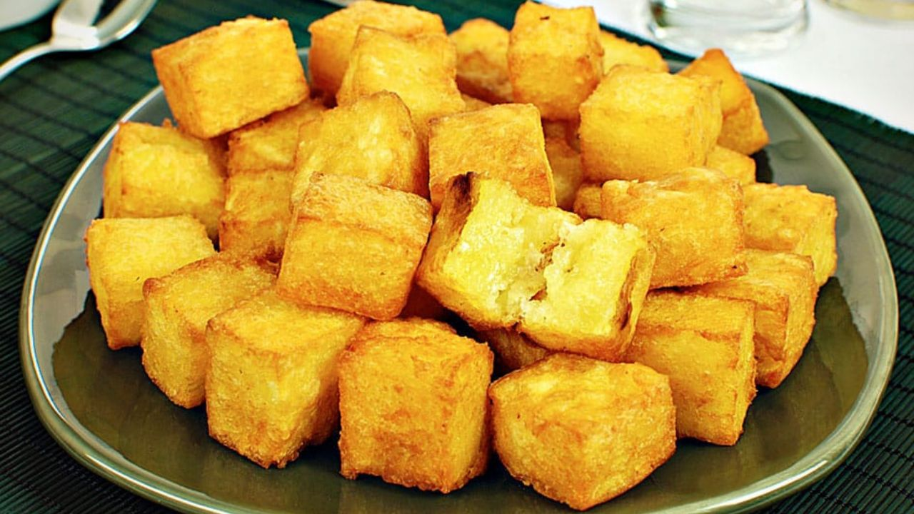
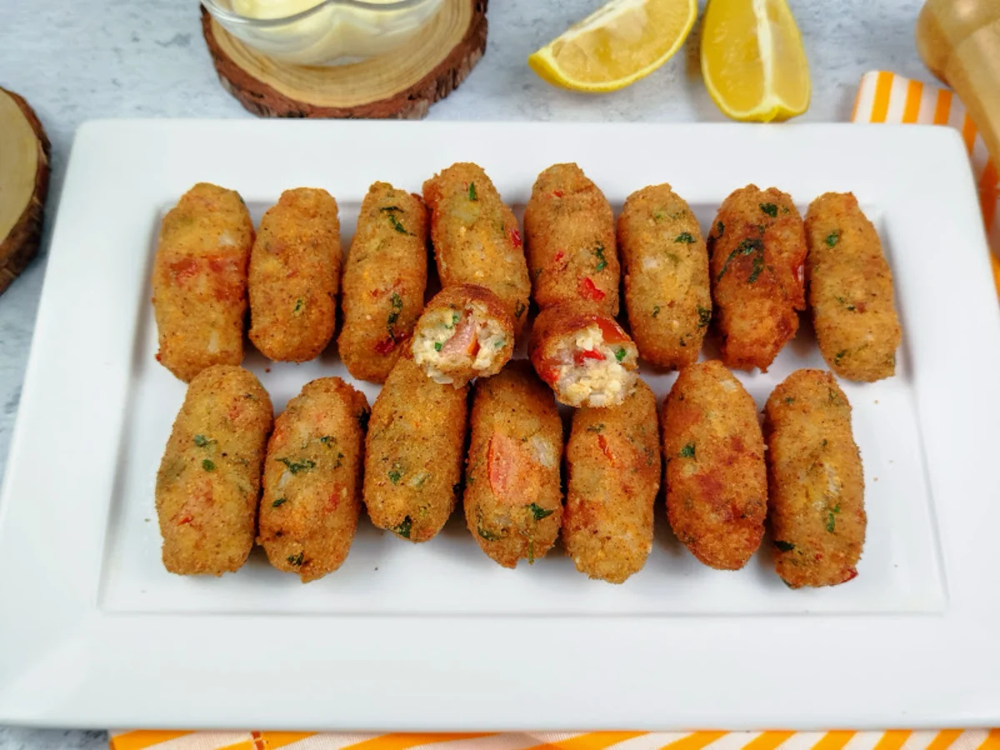
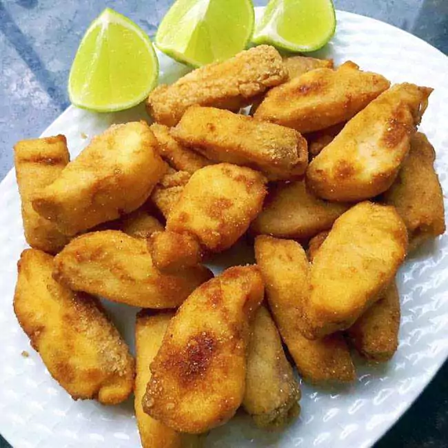

Receitas de Entradas
Mandioca Frita
A mandioca frita é um petisco tradicional nos cardápios de botecos do Brasil.
Ver receitaFrango Frito Empanado
O melhor petisco de boteco que você vai provar! O segredo é deixar marinando por, no mínimo, 1 hora - se conseguir deixar mais tempo, o sabor fica ainda melhor.
Ver receitaBolinho de Arroz sem Ovo
Esse bolinho fácil é ótimo para aproveitar aquele arroz que sobrou da refeição anterior. Você não precisa usar ovo, pois o arroz e o queijo dão liga na massa. Experimente!
Ver receitaFilé de Peixe Empanado
Chegou a dar água na boca né? Então aproveite e faça hoje mesmo essa ótima receita de filé de peixe assado, empanado e crocante.
Ver receita